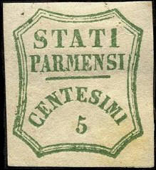
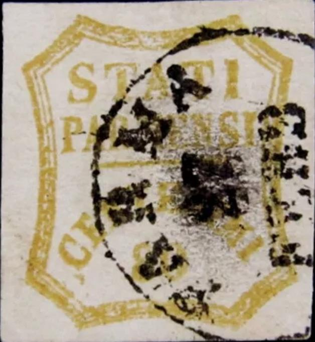
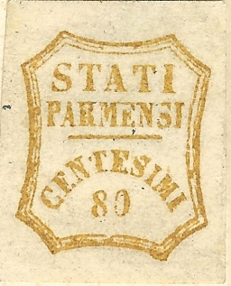
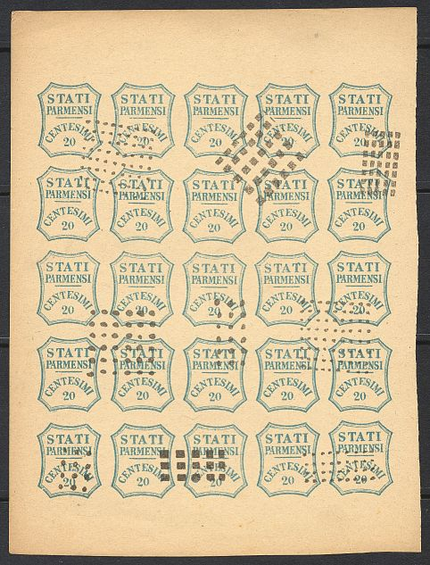
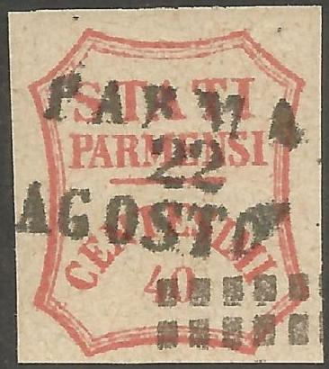

Return To Catalogue - Parma 1859 issue, part 2 - Parma 1859 issue, Fournier forgeries - Parma 1852 issue - Parma 1857 issue - Italy
Note: on my website many of the
pictures can not be seen! They are of course present in the
catalogue;
contact me if you want to purchase the catalogue.
With thanks to Lorenzo, (check his excellent
website on Italian States!
http://www.antichistati.com/800/index800.html) who kindly set
some of his images at my disposal.
For the Parma 1852 issue click here, for Parma 1857 issue here, for Parma 1859 issue, part 2, click here.
5 c green 6 c black on red (Newspaper tax stamp) 9 c black on blue (Newspaper tax stamp) 10 c brown 20 c blue 40 c red 80 c yellow
The two newspaper tax stamps were a kind of revenue on newspapers coming from abroad.
Value of the stamps |
|||
vc = very common c = common * = not so common ** = uncommon |
*** = very uncommon R = rare RR = very rare RRR = extremely rare |
||
| Value | Unused | Used | Remarks |
| 5 c | R | RRR | Shades of green; yellowish or bluish green |
| 6 c | *** | RRR | |
| 9 c | *** | R | |
| 10 c | R | RR | |
| 20 c | R | R | |
| 40 c | R | RRR | |
| 80 c | RRR | RRR | |
For the specialist: the 5 c green exists in two shades of green (blue green and yellow green). The 40 c exists in brown red and vermilion red. All these stamps are more valuable in used condition than unused (except the 6 c black on red and 20 c blue). The 5 c and 40 c are very rare used. There are only 1 letter and 5 single used pieces known of the 80 c! The 10 c, 20 c, 40 c and 80 c exist with wide or narrow '0'.
Typical cancel: circle with city name (in black or red):


A cancelled stamp from Robyn Kwiecinski (it is unclear if the
cancel is genuine)


Forged cancel (on a genuine stamp?)
Excellent forgeries exist (see examples below). The genuine stamps should have the following characteristics:
1) The upper right part of the "I" of
"STATI" is missing (it looks like a "1"),
2) There is a bar under "PARMENSI", it extends from the
beginning of the "N" of "CENTESIMI" to the
first "I" of this word,
3) There is a break in the inner frame line just besides the
"I" of "PARMENSI" (not always visible),
4) Note the shape of the letters, especially the "S"
and "A" of "STATI".
The forger Sperati has made forgeries of the values 5 c, 40 c and 80 c.
Sperati made at least three different forgeries of the 80 c (called reproduction A, B and C).

(From left to right reproductions A, B and C)
In reproduction A the "0" of "80" is partly missing. The dots and breaks in the framelines seem to appear at the same places for each forgery for this particular reproduction.


Sperati's forgery 'A' of the 80 c value

(A Sperati forgery, obtained from Richard Frajola's website
http://www.seymourfamily.com/rfrajola/Sperati/speratiindex.htm)
I think the above forgery is reproduction B. Note the broken frameline above the "A" of "STATI" and below the "80". The upper part of the "E" of "PARMENSI" seems to be broken.

(A Sperati forgery, obtained from Richard Frajola's website
http://www.seymourfamily.com/rfrajola/Sperati/speratiindex.htm)
I think the above forgery is reproduction C. Note the broken bottom parts of the "E" and "S" of "CENTESIMI" and the fat leg of the "R" of "PARMENSI".

Sperati forgery with forged cancel "PARMA 19 NOV 58".
The next two stamps are Sperati forgeries of the 5 c value:


Reproduction 'A'. Both Reproduction 'A' and 'B' have a dot
between the "T" and "E" of
"CENTESIMI". Also in both reproductions, the
"E" of "PARMENSI" has a missing central
horizontal line.
Note that the same dots and imperfections appear in the same places in the above two forgeries. Sperati forgeries are not often met with and are quite expensive.

Sperati forgery of the 40 c value. The genuine stamp position
from which this forgery was made has a red dot in the outer frame
above the "A" of "STATI".
Sperati forgeries exist with a forged "PARMA 19 NOV 58" cancel, but other forged cancels might exist. I've also seen this cancel on a 80 c Sperati forgery.

Sperati forgery with forged cancel "PARMA 19 NOV 58".
Simpler forgeries can be detected with the "I" of "STATI": this 'I' has no cross-stroke at the top. Also the value number are quite different in some forgeries. The outer frame consists of three seperate lines. The middle line is closer to the outer line than to the inner line.


The above stamp is the first forgery described in Album Weeds, the outer line of the outer frame is about 10 times thicker than the other 2 lines of the frame. There is no line at all below "PARMENSI", this can be used as a very easy test to detect this forgery. The 'A' of 'PARMENSI' is below the center of the "S" of "STATI". The "P" of "PARMENSI" touches the frame line. The shorter lines of the octogonal frame are straight, instead of being bent slightly inwards. I have seen the values: 5 c, 9 c, 20 c, 40 c and 80 c of this forgery. There is a bogus value of 60 c of this forgery:
(Bogus value of 60 c, reduced size)
I think the above stamps are the second forgeries described in Album Weeds. This forgery is cancelled with a square of dots or rectangles as shown here (these cancels never existed in Parma). The "I" of "STATI" has a large top stroke. Note the strange shape of the "M" of "PARMENSI". Fournier offers these forgeries in his 1914 pricelist; the 5 to the 80 c (5 values) for 1 Swiss Franc and the two newspaper stamps for 1 Swiss Franc as well. He offers them as second choice forgeries.



Here, the same forgeries, with an additional rectangle with
crossed lines cancel. All pasted on some old newspapers. These
forgeries were offered from Romania (2017).

Here a 40 c forgery, which is 'enhanced' by applying a
"PARMA 22 AGOSTO" cancel to it.
For more forgeries of Parma, click here.
Parma 1859 issue, Fournier forgeries, click heres


{kind=link}
{kind=link}
{kind=link}
{kind=link}
{kind=link}